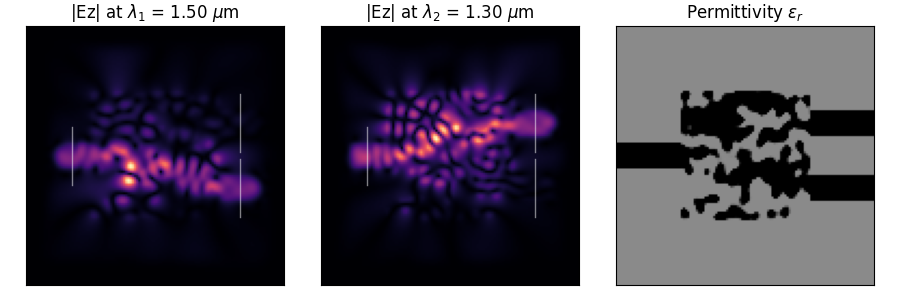

Photonics2D#
{kind=link}
Version |
0 |
Design space |
|
Objectives |
neg_field_overlap: ↓ |
Conditions |
lambda1: 1.5 lambda2: 1.3 blur_radius: 2 |
Dataset |
|
Import |
|
Photonic Inverse Design 2D Problem (Wavelength Demultiplexer).
Problem Description#
Optimize a 2D material distribution (rho) to function as a wavelength
demultiplexer, routing wave with lambda1 to output 1 and lambda2 to output 2. The
design variables represent material density which is converted to permittivity
using filtering and projection.
Design space#
2D tensor rho (num_elems_x, num_elems_y) with values in [0, 1], representing material density.
Stored as design_space (gymnasium.spaces.Box).
Objectives#
neg_field_overlap: Combined objective to minimize, defined aspenalty - overlap1 * overlap2. Lower is better. This is the value returned bysimulateand corresponds to the overlap in the target electrical fields with the desired demultiplexing locations. Note thatoptimizeinternally works with a normalized version for stability (penalty - normalized_overlap) and reports history (OptiStep) corresponding to that normalized version. Note: This means comparing the values returned bysimulateandoptimizedirectly may not yield similar numbers.
Conditions#
These are designed as user-configurable parameters that alter the problem definition.
Default problem parameters that can be overridden via the config dict:
lambda1: The first input wavelength in μm (default: 1.5 μm).lambda2: The first input wavelength in μm (default: 1.3 μm).blur_radius: Radius for the density blurring filter (default: 2). Higher values correspond to larger elements, which could possibly be more manufacturable.num_elems_x: Number of grid cells in x (default: 120).num_elems_y: Number of grid cells in y (default: 120).
In practice, for the dataset loading, we will keep num_elems_x and num_elems_yto set
values for each dataset, such that different resolutions correspond to different
independent datasets.
Optimization Parameters#
Note: These are advanced parameters that alter the optimization process – we do not recommend changing these if you are only using the library for benchmarking, as it could make results less reproducible across papers using this problem.)
num_optimization_steps: Total number of optimization steps (default: 300).step_size: Adam optimizer step size (default: 1e-1).penalty_weight: Weight for the L2 penalty term (default: 1e-2). Larger values reduce unnecessary material, but may lead to worse performance if too large.eta: Projection center parameter (default: 0.5). There is little reason to change this.N_proj: Number of projection applications (default: 1). Increasing this can help make the design more binary.N_blur: Number of blur applications (default: 1). Increasing this smooths the design more.save_frame_interval: Interval for saving intermediate design frames during optimization. If > 0, saves a frame everysave_frame_intervaliterations to theopt_frames/directory. Default is 0 (disabled).
Internal Constants#
Note: These are not typically changed by users, but provided here for technical reference
dl: Spatial resolution (meters) (default: 40e-9).Npml: Number of PML cells (default: 20).epsr_min: Minimum relative permittivity (default: 1.0).epsr_max: Maximum relative permittivity (default: 12.0).space_slice: Extra space for source/probe slices (pixels) (default: 8).
Simulator#
The simulation uses the ceviche library’s Finite Difference Frequency Domain (FDFD)
solver (fdfd_ez). Optimization uses ceviche.optimizers.adam_optimize with
gradients computed via automatic differentiation (autograd).
Dataset#
This problem currently provides one dataset corresponding to resolution of 120x120, are available on the Hugging Face Datasets Hub.
v0#
Fields#
Each dataset contains:
lambda1: The first input wavelength in μm.lambda2: The second input wavelength in μm.blur_radius: Radius for the density blurring filter (pixels).optimal_design: The optimal design density array (shape num_elems_x, num_elems_y).optimization_history: A list of objective values from the optimization process (negative field overlap, where lower is better) – This is for advanced use.
Creation Method#
To generate a dataset for training, we generate (randomly, uniformly) swept over the following parameters:
\(\lambda_1 \in [0.5\mu m, 1.25\mu m]\) =
lambda1=rng.uniform(low=0.5, high=1.25, size=20)– This corresponds roughly to a portion of the visible spectrum up to near-infrared.\(\lambda_2 \in [0.75\mu m, 1.5\mu m]\) =
lambda2=rng.uniform(low=0.75, high=1.5, size=20)– This corresponds roughly to a portion of the visible spectrum up to near-infrared.\(r_{blur}\) =
blur_radius=range(0, 5)
Citation#
This problem is directly refactored from the Ceviche Library: https://github.com/fancompute/ceviche and if you use this problem your experiments, you can use the citation below provided by the original library authors:
@article{hughes2019forward,
title={Forward-Mode Differentiation of Maxwell's Equations},
author={Hughes, Tyler W and Williamson, Ian AD and Minkov, Momchil and Fan, Shanhui},
journal={ACS Photonics},
volume={6},
number={11},
pages={3010--3016},
year={2019},
publisher={ACS Publications}
}
Lead#
Mark Fuge @markfuge